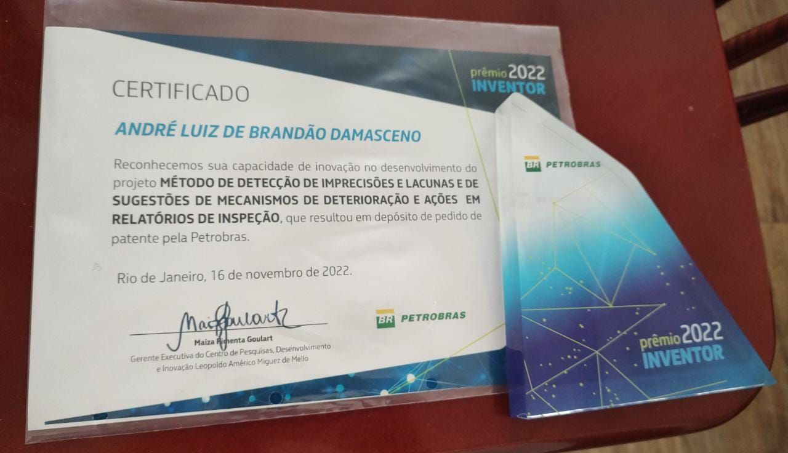

(S)ituation: Petrobras, a relevant Oil and Gas company, faced an issue of inaccuracies in reports of equipment inspection performed by experts.
(T)ask: Our goal was to build an artificial intelligence model to assist inspectors in report writing.
(A)ction: We constructed a comprehensive database of inspection reports and performed data analysis. Then, we developed a web service using a machine learning model to detect inaccuracies or gaps in reports and suggest appropriate terms for damages, causes, mechanisms, and actions.
(R)esult: As a result, the harmonic mean of accuracy and precision (F1 score) reached a result greater than 95%. This project received the Petrobras Inventor Award 2022 in recognition of the results achieved and the impact on the efficiency of equipment maintenance in refineries.
Developed under my technical leadership in collaboration with Petrobras during my time as a Data Scientist at ExACTa PUC-Rio in 2020, this project addressed a critical challenge in equipment integrity management within oil and gas refineries. One essential process involves the inspection of equipment, where experts document their assessments in technical reports. These reports, however, can sometimes include inaccuracies or omit crucial information—issues that must be quickly detected and corrected to ensure accurate inspections and compliance with maintenance deadlines.
Our proposal was to build AI-based solution to assist inspectors in drafting more accurate reports. We began by building a comprehensive database of inspection reports from all Petrobras refineries over recent years. These reports typically determine whether equipment is functioning properly and, if not, describe the damage, its cause, the failure mechanism, and the recommended corrective action. Throughout the project, a group of experienced inspectors supported us as consultants, validating our approach and clarifying domain-specific aspects.
After extracting, cleaning, and standardizing the report data, we discovered that the vocabulary used was relatively limited. This allowed us to classify all possible damage types, causes, mechanisms, and actions. We also identified strong correlations among these variables and between refinery location and certain damage types. For instance, rust being more common in coastal areas.
We developed a decision tree model to suggest likely mechanisms and corrective actions based on the reported damage and cause. This model was selected for its interpretability and achieved an F1 score above 95%. At Petrobras’ request, we also tested Azure AutoML, which delivered similar results. To simplify maintenance, we adopted the AutoML solution moving forward.
The final product, called the Digital Inspector, was deployed as a RESTful API integrated into Petrobras' inspection management system. It identifies missing or inconsistent information in real-time and suggests standardized terms for damage, cause, mechanism, and action. The model continuously improves with new, inspector-validated data.
This project was awarded the Petrobras Inventor Award 2022, recognizing its impact on inspection accuracy and maintenance efficiency across refineries in Brazil. It was a complex and rewarding challenge that I'm proud of, both for the technical achievements and its benefits to the industry.
 Figure 1: Petrobras Inventor Award 2022 for the “Digital Inspector” AI project developed with Petrobras.